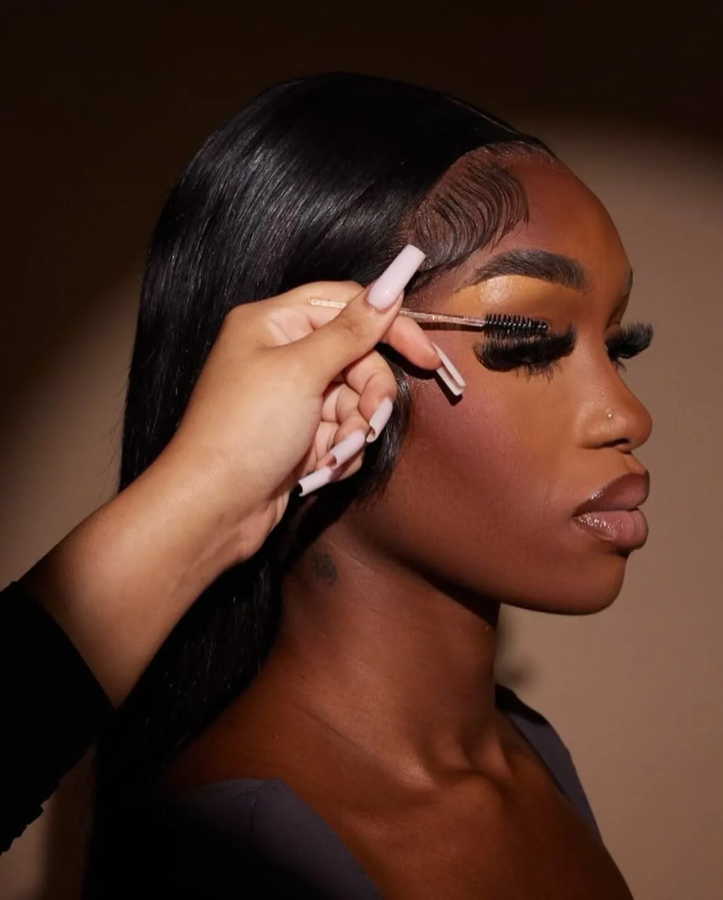
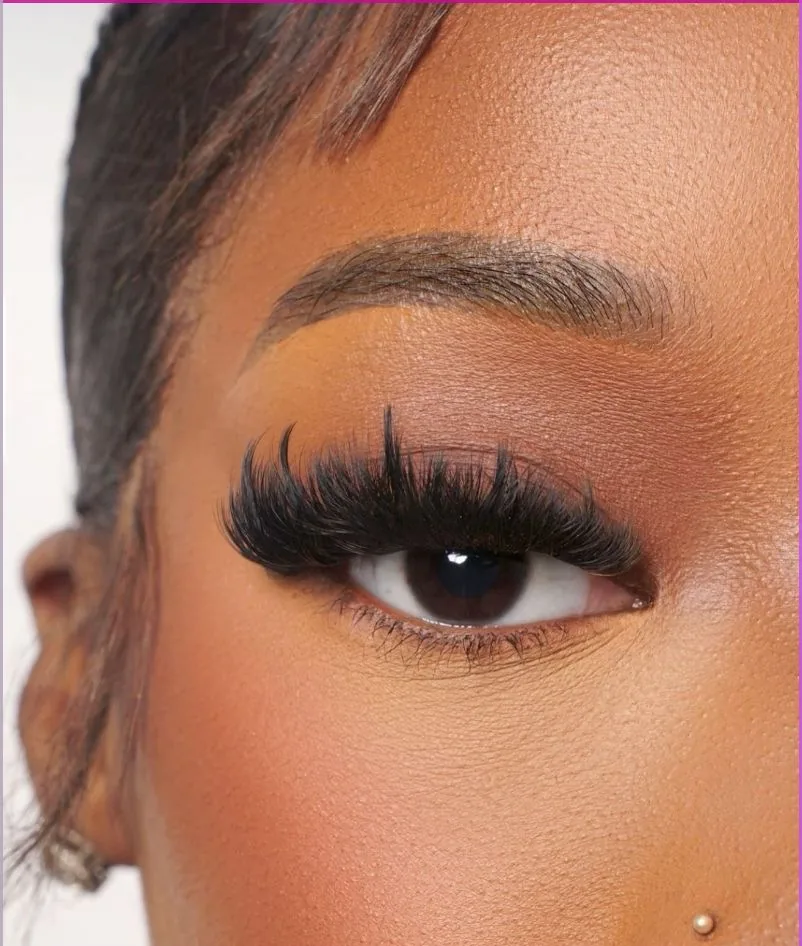
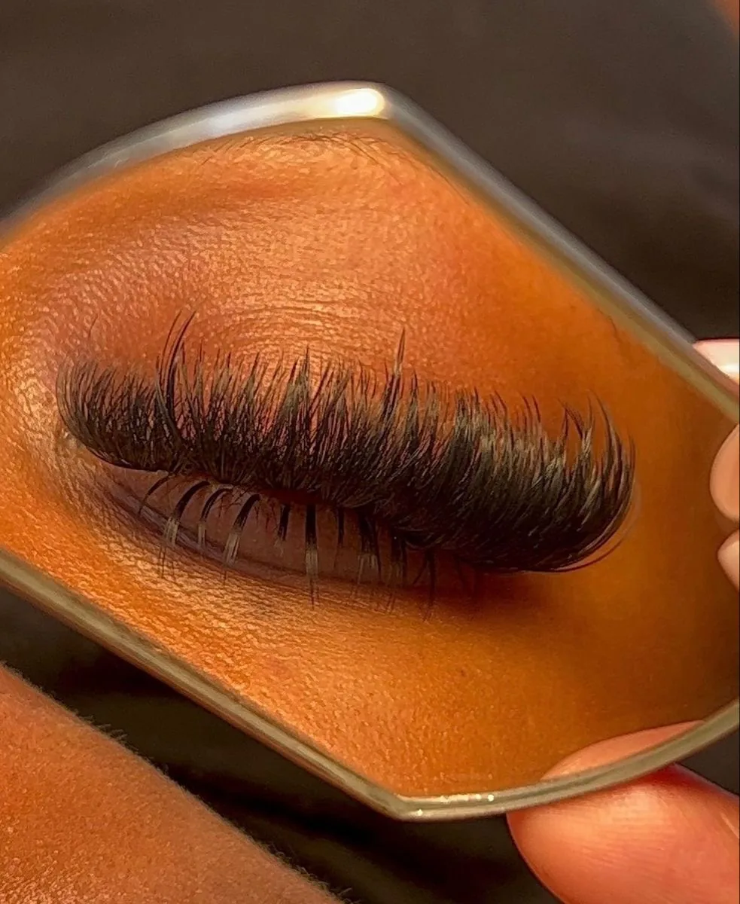

par Maya
REGARD
Extensions de cils, rehaussement et sourcils, sur mesure pour votre regard.
Prendre rendez-vousVotre artiste
Bonjour, moi c’est Maya. Je pose des extensions de cils depuis six ans, avec une idée simple : on doit vous reconnaître, en mieux.
Chaque pose est dessinée pour la forme de votre œil et votre quotidien, du plus discret au plus intense. Inès s’occupe de vos sourcils et du rehaussement.
Réserver avec Maya

Nos prestations
Les poses
Horaires
- lundi
- 9 h – 18 h
- mardi
- 9 h – 18 h
- mercredi
- 9 h – 18 h
- jeudi
- 9 h – 18 h
- vendredi
- 9 h – 18 h
- samedi
- 10 h – 17 h
- dimanche
- Fermé
Adresse
- 07 00 00 00 00
- bonjour@regard.example
- @regard.abidjan
Avant de réserver
Conditions de réservation
Acompte
L’acompte bloque votre créneau. Il est déduit du prix et n’est pas remboursable.
Retard
Au-delà de 15 minutes de retard, le rendez-vous peut être écourté ou reporté.
Report et annulation
Report ou annulation sans frais jusqu’à 24 h avant. Passé ce délai, l’acompte est perdu.
Paiement
Le solde se règle sur place : espèces, Wave ou Orange Money.
Avant de venir : Venez sans maquillage sur les yeux, sans lentilles, et évitez le café juste avant.
Votre regard, sans mascara.
Prendre rendez-vous